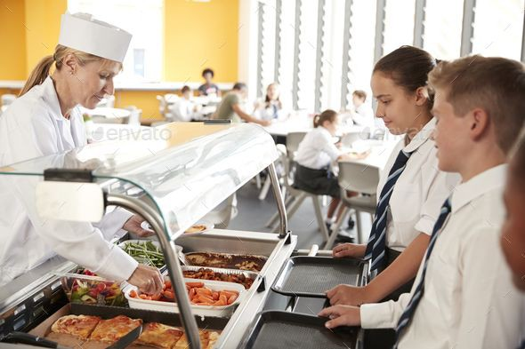
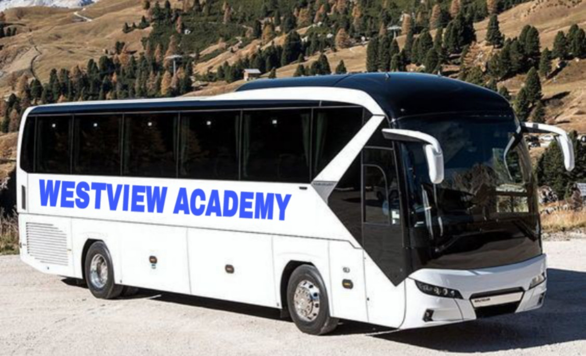
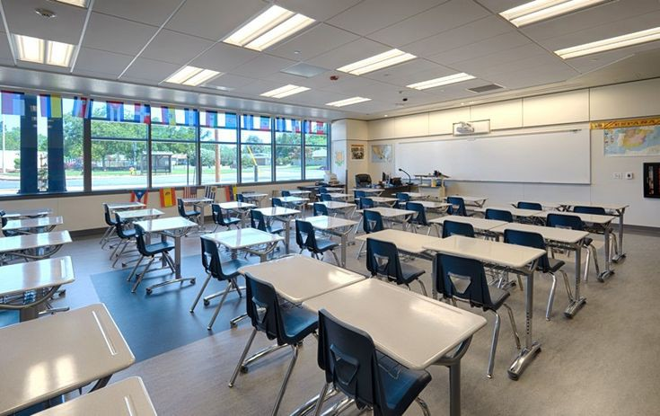
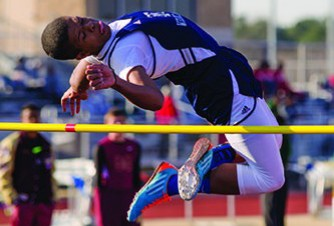

The newly opened Westview Academy is an innovative educational institution designed to foster creativity, critical thinking and collaboration. Located in modern, eco-friendly building, the school features state-of-the-art classroom, flexible learning spaces and interactive technology to engage students. With a focus on personalized learning, Westview Academy offers a diverse curriculum that blends traditional academics with hands on, project-based learning. Students have access to cutting-age science labs, a spacious library and a variety of extracurricular activities such as robotics, arts and athelets. The school's mission is to create an inclusive, nurturing environment where each student is encouraged to explore their potential and develop a passion for longlife learning.
The administration specialises on enrolling experienced educators who use engaging and effective teaching strategies to ensure that every single child can find his\her own sportlight.
Since the academy inherits some of it's educating strategies from the number one academy in Masvingo Province (Riverton Academy), it is a guarranteed fact that a lifelong high pass rate is to be expected.

The school's diet and food program focuses on a balanced variety of meals and snacks designed to support students' health and learning. The food served includes vital factors like national nutrition guidelines, school policies and available resources

A new bus has been introduced to ensure the safety and efficient travel of students to and from school. Well organised and properly managed, the bus service plays crucial role in maintaining punctuality and reducing travel stress for both students and parents.

The school's well-organised building plan is designed to create a safe, functional and conductive learning envrionment. The layout ensures smooth movement, accessbility and efficient use of space enhancing both academic and extracurricular activities.

Sports play a vital role in promoting teamwork, discipline and healthy competition. We offer a variety of sporting activities for students of all ages and skill levels including soccer, bascketball, volleyball, high-jump, and track and field. Our state-of-the-art sports facilities include a full-sized gymnasium, outdoor playing fields and a dedicated running track.